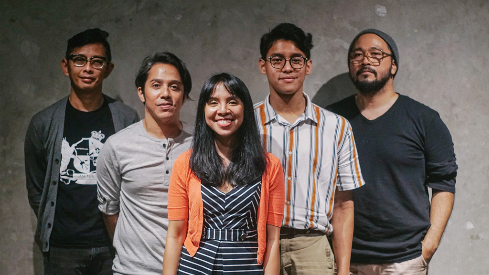
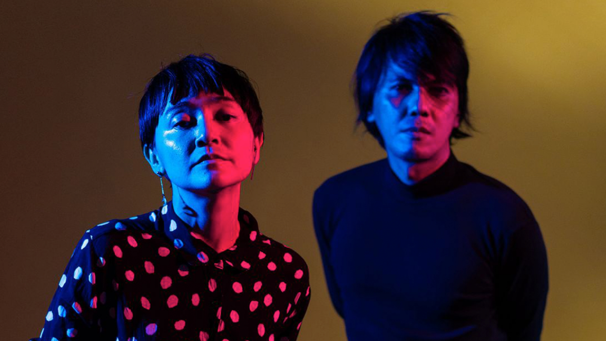
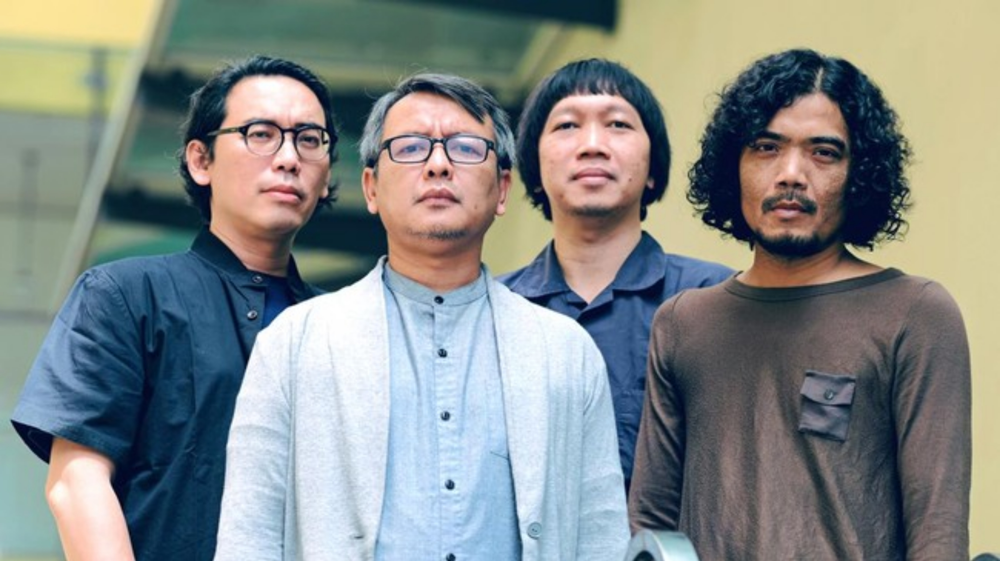

~ Line Up ~
Ardhito Pramono
Seorang penyanyi Ardhito dilahirkan di Jakarta pada 22 Mei 1995. Darah seni mengalir dari neneknya, yakni Sarwi Mumpuni, yang merupakan penyanyi jazz yang menghiasi pentas dengan suaranya yang merdu dan persona panggung yang menawan.
Star And Rabbit
Bagi khalayak yang belum terbiasa mendengarkan musik folk serta sedikit sentuhan indie pop dengan karakter vokal seperti ini, pastinya akan merasa ilfil mendengarkan suara vokal duo Stars and Rabbit. Akan tetapi, di sanalah sebenarnya keunikan dan karakter musik Stars and Rabbit dapat dirasakan dan dengarkan sensasinya. Keunikan vokal Elda Suryani yang bisa dibilang sampai titik annoying ini termasuk tipe karakter vokal yang berbeda seperti yang ada kebanyakan.
Efek Rumah Kaca
Efek Rumah Kaca adalah grup musik indie yang berasal dari Jakarta. Terdiri dari Cholil Mahmud (vokal utama, gitar), Poppie Airil (vokal latar, bass), Akbar Bagus Sudibyo (drum, vokal latar), dan Reza Ryan (gitar). Mereka dikenal oleh para pecinta musik di Indonesia karena lagu-lagu mereka yang banyak menyentuh.
Informasi Tempat Duduk